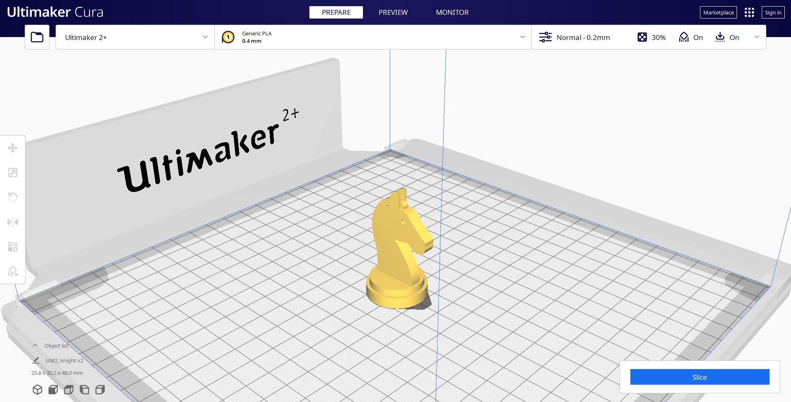
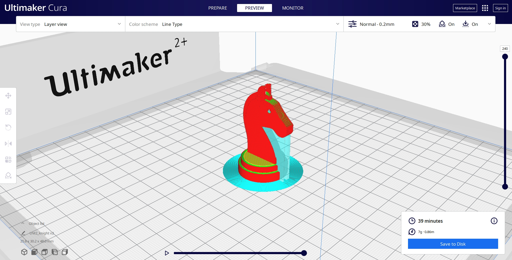
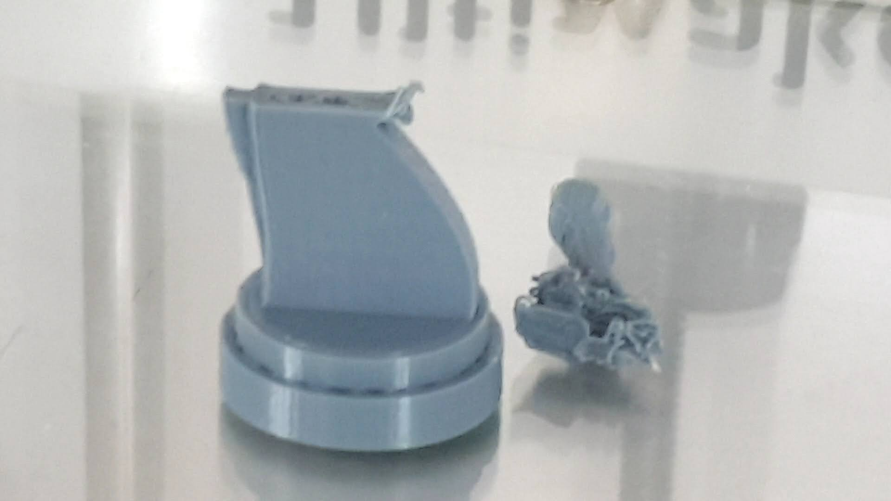

3D Printing
3D Printing Certificate
Machine and Settings

|
| Machine |
Ultimaker 2+ |
| Build Volume(mm) |
210x210x205 |
| Filament |
Polylactic Acid(PLA) |
| Filament Dia.(mm) |
2.85 |
| Layer Height(mm) |
0.2-0.25 |
| Infill |
10-20% |
|
Knight Chess Piece
Before looking at how I 3D printed this knight chess piece, have a look
at how I made the 3D model in Fusion 360
[here].
The 3D model in Fusion 360 is first exported into an stereolithography(STL)
file, then I imported it into CURA which is the software I use to slice
the STL file into a gcode file to be saved into a SD card to be read and
printed by the 3D printer.
Import into Cura

This is how my knight piece looks when the STL file is imported into
Cura. This visualizes where this 3D model is positioned when printing and
it's size in relation to the Ultimaker 2+ print space.
Print Settings
Here are the final print settings for printing the knight piece. Do note
that I went through a few iterations in the settings specifically the
support settings. I will go through my experiences later in this
documentation.
Slicing

After pressing the slice button, here you can see the model being
sliced with every red line representing the individual layer that will be
printed, while the blue lines represent the brim and supports generated.
At the bottom right, you can also see the estimated print time that it
would take to complete this 3D print.
What Went Wrong
First Failed Print

Here my print have failed, as you can see, the tree support have fallen
over and I had to stop the print. What I can understand from this is that
the tree support is not stable and I need to add a brim to improve it's
stability. There could be another factor, and that is the machine speed
is too fast resulting in some vibration causing the support to come loose.
Therefore, I decided to change the print settings and add a brim to the
print and change to another machine that is set to a slower speed as to
my knowledge is that the machine speed setting cannot be changed from the
print settings in Cura.
Second Failed Print

After changing to another 3D printing machine and adding the brim,
the print turned out better but their is still some visible defects due
to there still being movement and vibration of the tree support, so I
decided that for the next print, I will make use of a more stable support
which is the normal support.
Successful Print
Before Clean Up

After all the trial and error, here you can see the final successfully
printed knight chess piece, however, with the use of normal support, the
clean up process is much harder as the support are harder to remove
though without this type of support, I do not think that I will be able
to print it successfully.
After Clean Up

Here you can see the final product after clean up, though it is not
perfect with some areas still having supports not removed, however,
overall I found that the final product turned out not too bad.
Conclusion
After my experience of preparing the file to using the 3D printer, I
conclude that it can be quite tricky to fine tune the print settings to
suite your model and to be able to successfully print it out. My key
takeaway is to bare in mind how the 3D model is design and trying to
minimize the amount of overhangs and reduce the reliance of supports,
however, if the design comes to require overhangs, then the adjustment
of print settings have to be taken into serious consideration.